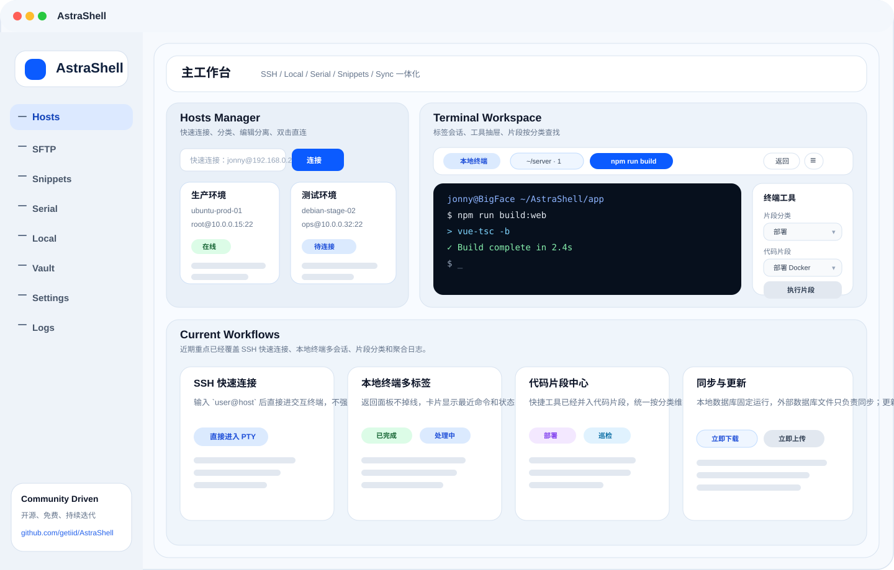
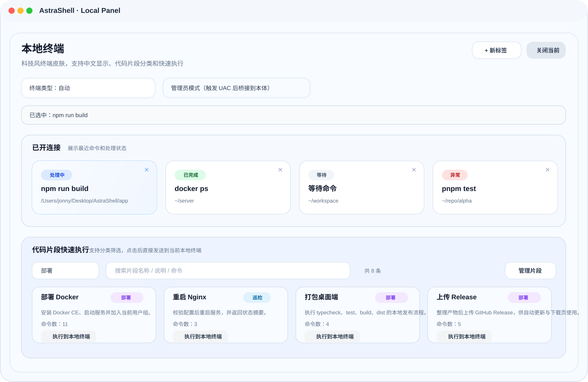

开源项目
永久免费
桌面端主线已可用
把 SSH、SFTP、本地终端、串口、代码片段和同步中心收进一个工作台。
AstraShell 不是只做一块功能，而是把日常连接、传文件、执行脚本、查看日志、管理密钥、同步数据和分发更新串成完整工作流。你不需要在一堆小工具之间来回切换，所有核心动作都留在同一个桌面里。
正在读取 GitHub 最新版本...
当前界面
下面两张图已经按当前软件状态重绘，不再沿用旧版面板布局。

工作台总览
主工作台同时覆盖 Hosts、Terminal Workspace、终端工具抽屉和当前主流程，突出“先选分类再选片段”的新交互。

本地终端面板
已开连接卡片支持最近命令和状态显示。单击只选中目标标签，双击进入会话，下面的代码片段执行会跟着选中的标签走。
推荐工作流
AstraShell 的设计重点不是做一堆孤立页面，而是把日常运维动作串起来。
维护主机和密钥
在 Hosts 中整理 SSH 主机，在 Vault 中保存密钥材料。快速连接支持直接输入 `user@host` 进入交互终端。
整理常用脚本
把部署、巡检、打包、发布动作整理进代码片段中心。快捷工具已经并入代码片段，不再分两套入口。
在终端内直接调用
进入 SSH、本地终端或串口后，打开终端工具，先选分类，再选片段，立即执行或发送原文。
同步与追溯
通过同步中心把外部数据库文件作为共享目标，再通过 Logs 查看按目标聚合后的输入和系统反馈。
核心能力
当前桌面端已经具备持续使用所需的主线能力，重点偏向个人运维和轻量服务器管理。
SSH 与终端工作区
多标签 SSH、中文编码切换、片段执行、右键复制粘贴、返回连接面板不断线。
- 快速连接可直接进入交互终端
- 标签关闭才真正断开会话
- 片段可执行，也可发送原文
SFTP 双栏
左右两栏独立切换本地或远程连接，适合对比传输、拖拽操作和目录整理。
- 本地与远程可以混搭
- 支持排序、过滤、路径切换
- Windows 本地根层可直接列出盘符
代码片段中心
统一维护部署、巡检、构建、发布脚本，并把结果回写到片段详情中。
- 支持分类、说明、提醒日期
- 支持按主机绑定执行
- 支持本地终端与串口直接发片段
本地终端与串口
一边做本地打包，一边切回 SSH 或串口排查状态，不需要为了看面板先关闭终端。
- 本地终端支持多标签
- 单击选中、双击进入会话
- 串口支持 ASCII / HEX / 定时发送
同步与日志
数据同步和操作追溯已经从主工作台拆分成独立模块，便于持续维护。
- 本地数据库固定运行
- 外部数据库文件只负责同步
- 日志按目标聚合，避免碎片化记录
版本更新
桌面端发布走 GitHub Release，站点下载按钮会自动读取最新 Release 资产。
- Windows 自动更新链路已接通
- macOS 当前仍可能需要手动去隔离
- 安卓预览包可通过 Release 分发
平台与下载
桌面端当前是主线发布对象，移动端保持预览推进。
页面会尝试读取 GitHub 最新 Release，并把 Windows、macOS、Android 的按钮直接指向对应安装包。读取失败时，按钮会自动退回 Release 列表页。
- 项目保持开源、免费、无阉割功能版本。
- 桌面端主线继续以 SSH、SFTP、本地终端、片段和同步为中心迭代。
- 欢迎通过 Issue / PR 直接参与功能和界面改进。
- 文档、截图、发布说明需要随版本一起维护，不要让站点落后于软件状态。
AstraShell · Community Driven · Open Source Forever